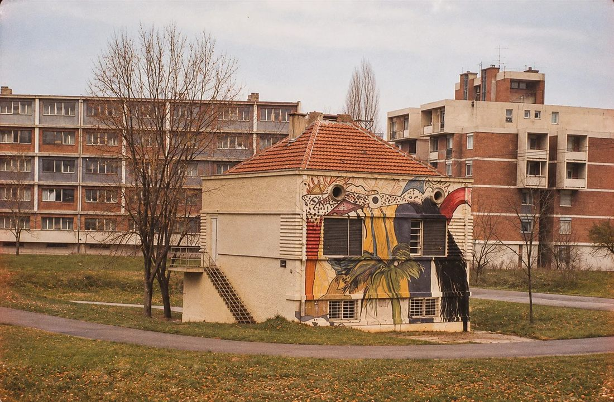

NAŠ KRAJ · KULTURA
Žuta kuća: pet godina slobode na livadi kod Štranda
Ko je krajem osamdesetih bio mlad u Novom Sadu, zna gde je bila. Na livadi između Limana i Štranda, na tadašnjem Istarskom keju, stajala je jedna žuta kuća. Pet godina je bila mesto gde su se sretali slikari, muzičari, psiholozi, filmadžije i svi koji nisu znali gde bi drugde. Danas je nema, ali je generacije pamte kao jedno od najvažnijih mesta novosadske alternativne kulture.

Kuću je 1939. godine sagradio Pal Čaki i u njoj je decenijama živela njegova porodica. Urbanistički plan iz šezdesetih predviđao je da se sruši, jer je ceo taj deo uz kej trebalo da postane zelena površina. Porodica se iselila oko 1980, kuća je eksproprisana i ostala je prazna.
Onda je 1988. godine, na predlog Saveza socijalističke omladine Novog Sada, grad odlučio da prazan prostor ustupi mladima. Ključeve su dobili 1. oktobra 1988, a svečano otvaranje bilo je 15. oktobra. Mladima je rečeno da mogu da ostanu oko pet godina, dok kuća ne dođe na red za rušenje. Tih pet godina su iskoristili do kraja.
U decembru 1988. osnovano je Udruženje za kreativno angažovanje mladih "Žuta kuća", a predsednik je do 1993. bio akademski slikar Dragan Gucunski. Već u novembru počela je škola crtanja, na spratu su radili psiholozi, a u prizemlju su bili galerija i prostor za probe. Smenjivali su se izložbe i performansi, a izlagali su Boba Berić, Rastislav Škulec, Zoran Pantelić, Gucunski i mnogi drugi.
U oktobru 1990. Edi Keler je u prizemlju otvorio klub, i Žuta kuća je postala i jedna od najvažnijih koncertnih adresa u gradu. Svirali su Obojeni program, Boje, Naučnici, DVAS, Rex Ilusivii, Telal Viig, Circo de la Primavera, Sing Sing Singers, Stone Free, Imperium of Jazz i Rambo Amadeus. Na velikim koncertima 25. maja nastupali su i Vrisak generacije, Disciplina kičme i S.T.R.A.H.
Bilo je to vreme kada se zemlja oko njih raspadala, a ova mala kuća na keju ostala je mesto gde je važilo nešto drugo: zajedništvo, stvaranje i sloboda.
Rok od pet godina je istekao. Osnivači su se 1993. povukli, kuća je kratko radila kao kafana, a onda je napuštena. Godine 1995. srušena je za svega nekoliko dana. Dokumentaciju o njenom radu sačuvala je Silvija Dražić, unuka Pala Čakija.
Mesto na kome je stajala Žuta kuća i danas izaziva rasprave: grad je poslednjih godina na tom prostoru planirao gradnju crkve, a komšije sa Limana o tome imaju podeljena mišljenja. Duh Žute kuće, kako kažu oni koji su je pamtili, i dalje živi u gradu, u bendovima, galerijama i ljudima koji su tu napravili prve korake.
Bili ste u Žutoj kući? Imate fotografiju, plakat ili ulaznicu sa koncerta? Pošaljite nam, ovakve uspomene ne smeju da nestanu.
Pošalji fotografiju ili sećanje